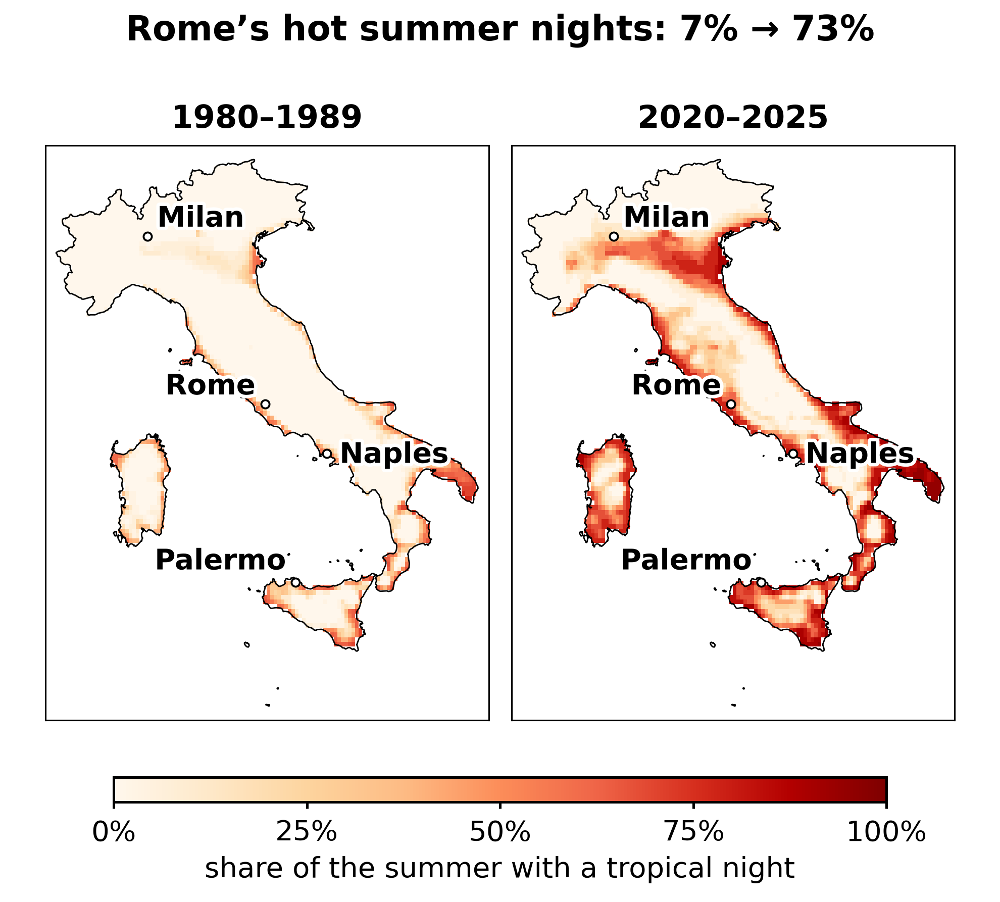
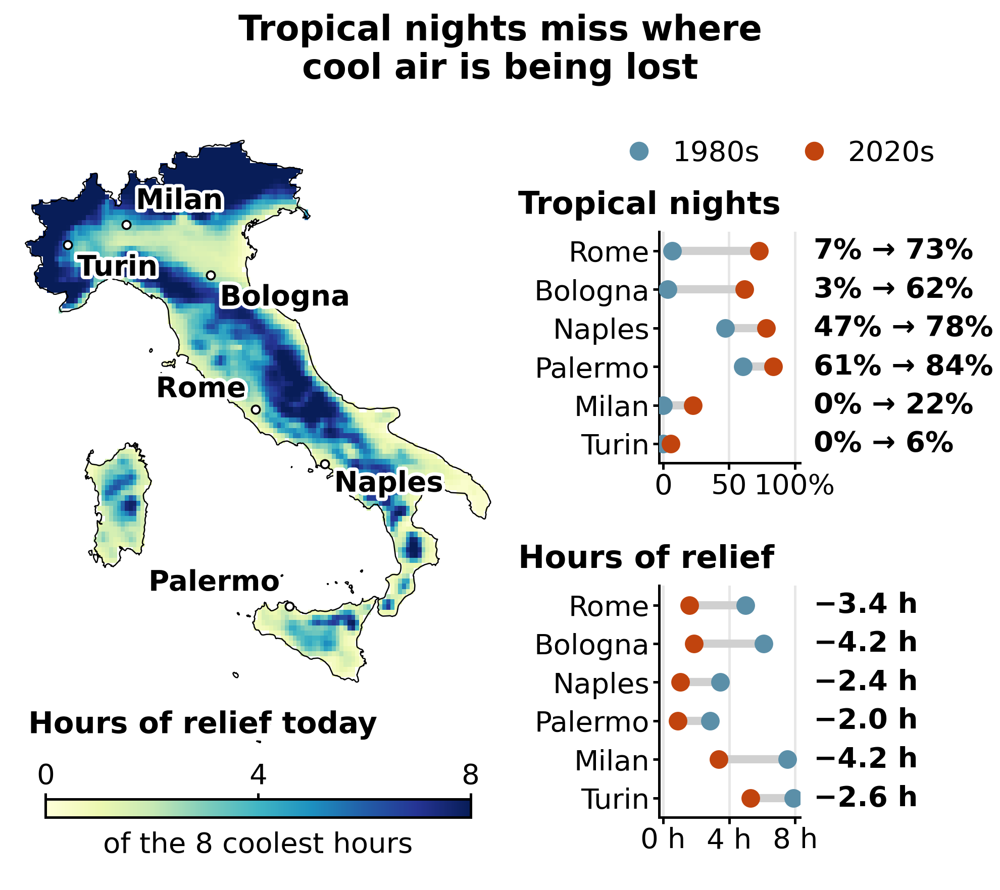
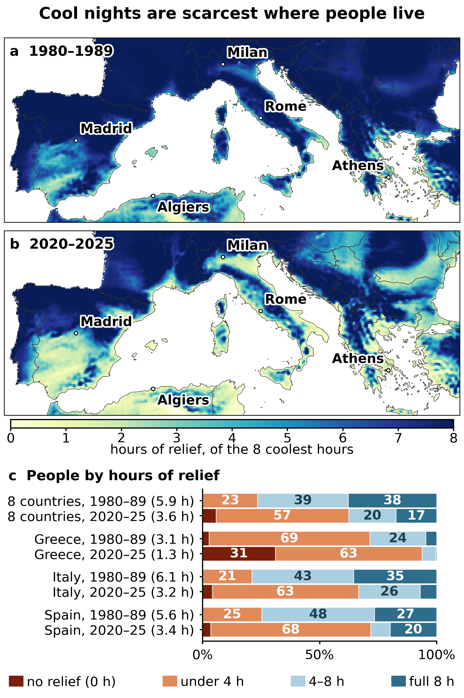

#001 Southern Europe has stopped cooling down at night
Two indicators of night-time heat for June–August, 2020–2025 against 1980–1989: the share of summer months with a tropical average night, and the hours of relief among the eight coldest hours of the day. Also in Italian: L'Europa meridionale ha smesso di rinfrescarsi di notte.
Figures
Click an image for full resolution.

make_fig1.py.
make_fig2.py.
make_fig3.py.Check the article in three commands
pip install -r requirements.txt cd code python check_numbers.py # recomputes 48 published numbers, PASS/FAIL each python make_fig1.py en # also make_fig2.py, make_fig3.py; "it" for Italian python check_cities.py # does each quoted place's value describe the place?
Nothing is downloaded and no account is needed: the intermediate data (3 MB) is in the repository. On the published data, all 48 numbers reproduce, and the figure scripts redraw the published figures. To rebuild the intermediate data from the public sources, see the README.
Data sources
| Dataset | Provider |
|---|---|
| ERA5-Land monthly averages by hour of day, 2 m temperature, 0.1° | Copernicus Climate Change Service |
| 5 km census population grid, 2021 | Eurostat GISCO (© European Union, Eurostat; CC BY 4.0 assumed, per Eurostat's census-grid page) |
| Country outlines, 1:10m | Natural Earth |
What cannot be checked from the repository alone
The ±0.6 °C sampling uncertainty on the warming, and the June +3.2 °C / September +1.0 °C figures, rest on raw downloads that are not included. The README says so.
How to cite
Cite the archived code and data, not the post: Gallotti, R. (2026). BIG IF TRUE #001, Southern Europe has stopped cooling down at night: code and data (v1.0.0). Zenodo. DOI: to be added at publication.
Cards on the table
This analysis was written and run by Claude Opus 5 under the author's direction, not re-read line by line and not peer-reviewed. The bug log (17 entries) records the errors found and fixed, and KEY_NUMBERS.md lists every number in the article. Found a difference? Open an issue.
Peer-reviewed benchmark: Vavassori, Žgela & Brovelli, Applied Geomatics 18:84 (2026), open access. Health and cooling sources are listed in the README.
This measures availability of cool air, not sleep. ERA5-Land has no urban canopy, so city values are a floor.